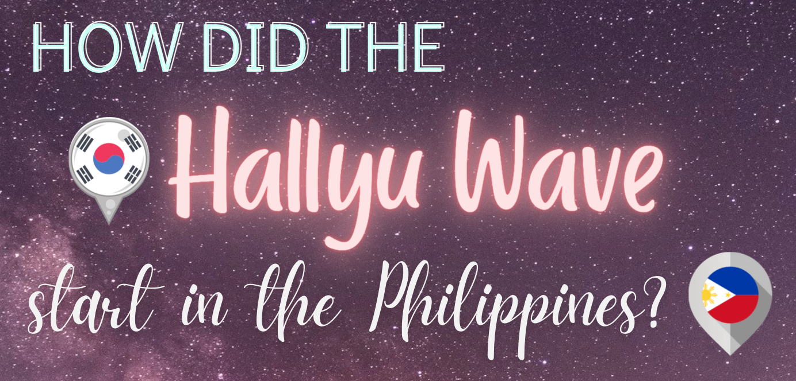

Let us explore the world of Hallyu!

~ a place where you can have a glimpse of the growing influence of the Korean Wave, specifically in the Philippines, and how it has affected the lives of Hallyu fans
|
Hallyu is a Korean word that represents the idea of Korean culture spreading around the world. It is a combination of two words, ‘han,’ the quality of being Korean, and ‘llyu’ which means “to flow.” Put them together, we have what is more commonly known as the “Korean Wave.” Hallyu wave is the surge and the growing influence of South Korean pop culture worldwide. It is a product of globalization that has deliberately or inadvertently popularized Korean culture in various ways. Hallyu wave is the surge and the growing influence of South Korean pop culture worldwide. It is a product of globalization that has deliberately or inadvertently popularized Korean culture in various ways.Before, the Hallyu umbrella only covers Korean music, dramas, and movies. But in recent years, the meaning and coverage of this word have evolved and expanded similarly to the surge of the Hallyu itself with the help of social media and the internet. In fact, Hallyu has already become a buzzword for almost everything about Korea that is being cultured to numerous Asian, American, and European countries, showing the state of how borderless the Korean Wave is. |
|  |
|
When the Korean wave really started to kick off in the late 1990s, Korean entertainment and culture primarily spread to other parts of Asia. In the last five years or so, it has seen a greater presence in other parts of the world as well, especially in the Philippines. Back in the day, K-Pop had pretty much caught the attention and interest of many Filipinos after getting hooked on songs like 2NE1's "Fire" or Wonder Girls' "Nobody" years ago. These songs were very simple yet were so catchy. I remember hearing them on the radio several times a day and being performed at birthday parties or at the karaoke one after another. It was nearly impossible for anyone not to have at least heard of the songs “Nobody” or "Fire" in the early 2000s.Then came the “In or Out” era of Sandara Park, who managed to get her way into the Philippine spotlight and rose to fame for being the "Pambansang Krung-Krung ng Bayan." She became one of the major forerunners of the Hallyu wave in the Philippines. And by this time, K-Pop was starting to take further root in the country. However, before all these, there was already a slew of Asiannovelas being broadcasted by local Pinoy stations. It was around 2008 or 2009 when the Korean television series or Korean Novelas began to fill the Philippine markets. While ABS-CBN had Taiwan’s Meteor Garden, GMA took the Korean drama route, airing dramas like Autumn in My Heart, Winter Sonata, Full House, Jewel in the Palace, Stairway to Heaven, My Lovely Kim Sam Soon, Baker King, and Secret Garden to name a few. It was just a very refreshing alternative to the local and Western afternoon dramas, especially the Mexican telenovelas like Marimar, which was so popular at that time. By the end of 2011, the world was introduced to perhaps the most recognizable example of the Korean wave, Psy‘s Gangnam Style! As the first-ever video to reach the one billion view mark on YouTube, there was no escape in the chart-busting tune and dance move, which thrust the Hallyu into the previously impenetrable Hollywood market. |
|
Fast-forward to today. The Korean culture has boomed and has become very relevant in the mainstream media of the Philippines. For one, the acceptance and adaptation of large numbers of Filipinos to South Korean culture is highly transparent as manifested in the numerous Korean restaurants in the country, the commercialization of Korean cosmetic brands and K-pop or K-drama merchandise, the Korean grocery stores, and even the stability of Korean dramas and films aired in major Philippine television networks, such as GMA, ABS-CBN, and TV5, are becoming more mainstream in the Philippine pop culture. With all these, the Hallyu fever temperature of the Philippines is undeniably high. This means hour-long queues in restaurants offering unlimited Korean barbecue, K-pop concerts and fan meetings selling out in minutes, Filipino-dubbed Kdramas aired primetime on national TV, and K-beauty stores popping up in malls nationwide. The Hallyu phenomenon is so huge that in 2018, the Philippines reportedly had the highest growth rate in the number of Hallyu clubs and members in Southeast Asia. |